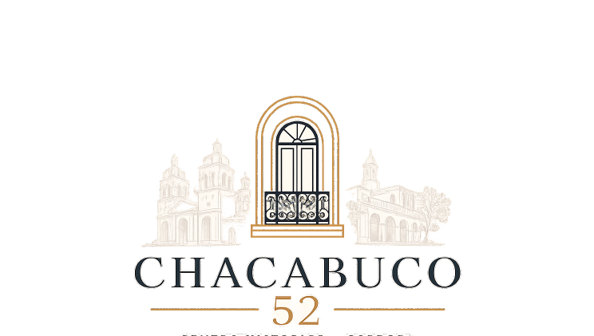
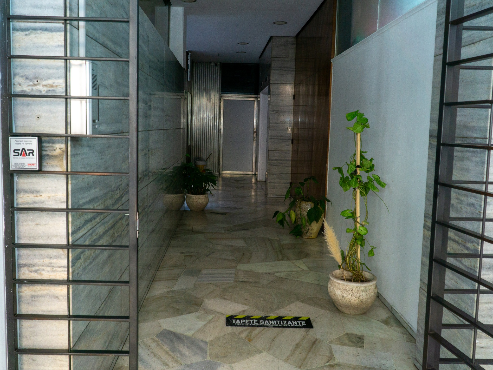

⌂
Dos dormitorios
Un dormitorio con cama doble y otro con dos camas individuales. Ambos cuentan con placares, cortinas blackout, ventilador de techo y calefacción eléctrica.

DOCTA CHACABUCO 52Centro Histórico · CórdobaUn hogar amplio, luminoso y tranquilo para descubrir la ciudad, trabajar, estudiar o estar cerca de lo que necesitás.
Hay quienes llegan a Córdoba para conocer su patrimonio histórico; quienes viajan por trabajo, estudios, tratamientos médicos o para visitar a familiares o amistades. Docta Chacabuco 52 busca responder a esas distintas necesidades con una ubicación estratégica y espacios cómodos, silenciosos y seguros.
El departamento familiar, ubicado en un edificio de construcción sólida, combina la cercanía con una ciudad activa y la tranquilidad de un ambiente interno. Al cerrar la puerta, podés dejar atrás el bullicio y disfrutar de tu propio espacio.

Ambientes funcionales para descansar, compartir una comida o acomodarte durante varios días.
Un dormitorio con cama doble y otro con dos camas individuales. Ambos cuentan con placares, cortinas blackout, ventilador de techo y calefacción eléctrica.
Un ambiente amplio y luminoso, con mesa para compartir y sofá cama doble como alternativa para descansar, dentro de una capacidad máxima de 4 personas.
Cocina con horno, microondas, cafetera, pava eléctrica, tostadora, licuadora y vajilla para preparar y disfrutar tus comidas.
Unidad interna en sexto piso y aberturas dobles que contribuyen al aislamiento acústico y al descanso.
Un espacio de servicio con plantas y cenicero. Fumar está permitido únicamente en el balcón.
Supermercado en el mismo edificio y lavandería en las inmediaciones para resolver necesidades cotidianas.
La unidad no cuenta con aire acondicionado ni lavarropas propio. La calefacción eléctrica está instalada en los dormitorios.
Sobre Bulevar Chacabuco, en el Centro Histórico, entre el área histórica y comercial y la dinámica de Nueva Córdoba. Una base práctica para recorrer la ciudad y llegar a distintos puntos de interés.
Tiempos orientativos; conviene verificarlos según el recorrido elegido.
Consultá por estadías prolongadas y contanos qué fechas tenés en mente. Te responderemos por correo para ayudarte a organizar tu visita.
Consultá por estadías prolongadas:
chacabuco52cordoba@gmail.comWhatsApp: +54 9 351 214 8993
El enlace directo de Booking y el QR definitivo se incorporan cuando estén confirmados.